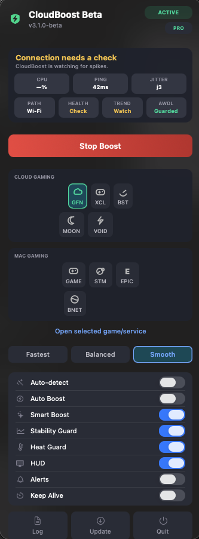

AWDL Guard
Handles the AirDrop/Handoff interface during sessions and restores it afterward.
Cloud and Mac gaming utility
CloudBoost is a menu bar app for short gaming sessions. It applies temporary network, power, and process tweaks, then rolls them back when the boost stops.

Why it exists
Cloud gaming can feel bad even when your speed test looks fine. Short Wi-Fi scans, background sync, sleep policy, DNS weirdness, thermal pressure, and process contention can all show up as stutter or input delay.
CloudBoost does not promise magic FPS. It gives you a focused session mode that tries to reduce the usual macOS interruptions and shows what is happening while you play.
Handles the AirDrop/Handoff interface during sessions and restores it afterward.
Combines DNS refresh, sleep prevention, process priority, and preset tuning.
Shows ping, jitter, network path, health, trend, and thermal-related signals.
Downloads the latest DMG from GitHub releases from inside the app.
Free vs PRO
Keep the free version for manual boosting and core profiles. Upgrade when you want automation, more platforms, and live session intelligence.
| Feature | Free | PRO |
|---|---|---|
| GeForce NOW, xCloud, Local Game | Included | Included |
| Manual Boost and Balanced mode | Included | Included |
| Steam, Epic Games, Battle.net | - | Included |
| Auto Boost and Auto-detect | - | Included |
| Stability Guard, Heat Guard, Smart Boost | - | Included |
| Competitive and Smooth presets | - | Included |
Some macOS networking and process changes require approval. CloudBoost asks when a selected session needs those actions.
No. CloudBoost does not use KEXTs, hidden daemons, or permanent system patches.
Yes. The free version includes core profiles and manual boost. PRO unlocks automation and advanced profiles.
Because CloudBoost is distributed outside the App Store, you may need to clear quarantine after installing: xattr -cr /Applications/"CloudBoost.app"
Ready to try it?